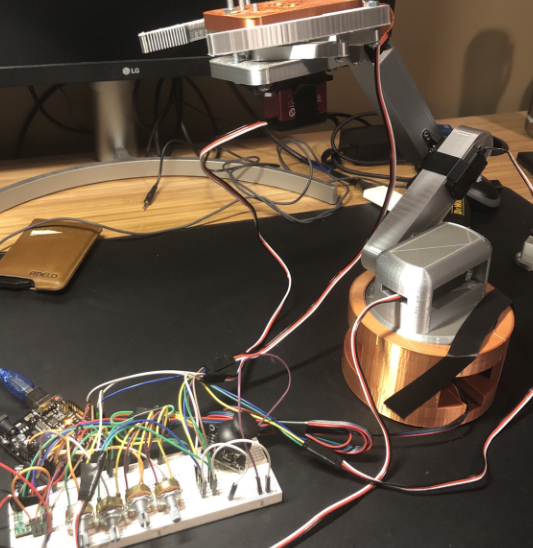

5-DOF Arduino Robot
March 2022 - May 2022
Motivation & Objectives

After recently getting introduced to Arduino, I set out to build an operable robot from scratch. For this project, I looked to expand my knowledge of programming, CAD, and 3D printing and learn new skills like soldering, wiring, and how to estimate the necessary joint torques depending on the robot's payload.
What I did . . .
- Created an amateur robotic arm (5 DOF)
- Designed with SolidWorks and manufactured with a 3D printer
- Utilized 4 servo motors and 1 stepper motor
- Joints controlled with 4 potentiometers and 1 joystick
What I learned . . .
- How to better plan and design prior to beginning the project (mechanically and electrically)
- Consider varying voltages from different motors while drawing from one power source
- Better methods of attaching motors to linkages
- How to use a 3D printer and design parts that can be easily printed
- 3D printed plastic parts generally shrink and do not conform exactly to specified dimensions
- How to program motor functions in Arduino
- That some motors like servos use PWM while motors like steppers require a separate driver to be controlled and protected
- How to solder better